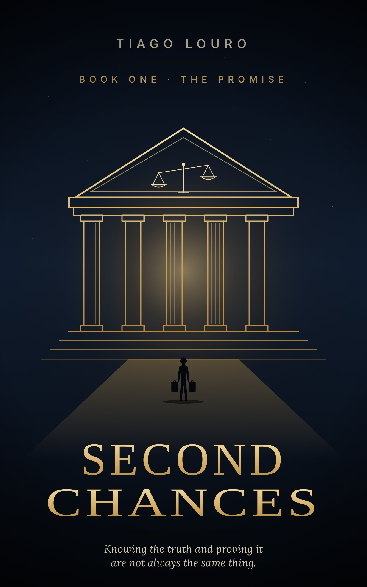

BOOK · PUBLISHED

Second
Chances.
Book One · The Promise
A novel by Tiago Louro. Carter Reyes lost his parents at fifteen. This is the story of a boy who was given very little and learned to make the most of it.
Fiction
BOOK · PUBLISHED

Book One · The Promise
A novel by Tiago Louro. Carter Reyes lost his parents at fifteen. This is the story of a boy who was given very little and learned to make the most of it.
Fiction